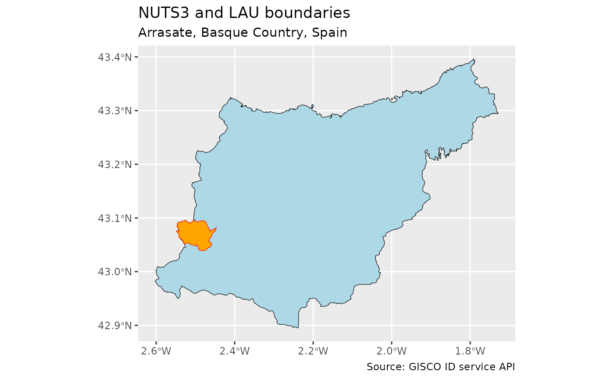

Functions to interact with the GISCO ID service API, which returns attributes and, optionally, geometry for different datasets at specified longitude and latitude coordinates.
Each endpoint available is implemented through a specific function, see Details.
Usage
gisco_id_api_geonames(
x = NULL,
y = NULL,
xmin = NULL,
ymin = NULL,
xmax = NULL,
ymax = NULL,
verbose = FALSE
)
gisco_id_api_nuts(
x = NULL,
y = NULL,
year = 2024,
epsg = c(4326, 4258, 3035),
verbose = FALSE,
nuts_id = NULL,
nuts_level = NULL,
geometry = TRUE
)
gisco_id_api_lau(
x,
y,
year = 2024,
epsg = c(4326, 4258, 3035),
verbose = FALSE,
geometry = TRUE
)
gisco_id_api_country(
x,
y,
year = 2024,
epsg = c(4326, 4258, 3035),
verbose = FALSE,
geometry = TRUE
)
gisco_id_api_river_basin(
x,
y,
year = 2019,
epsg = c(4326, 4258, 3035),
verbose = FALSE,
geometry = TRUE
)
gisco_id_api_biogeo_region(
x,
y,
year = 2016,
epsg = c(4326, 4258, 3035),
verbose = FALSE,
geometry = TRUE
)
gisco_id_api_census_grid(
x,
y,
year = 2021,
epsg = c(4326, 4258, 3035),
verbose = FALSE,
geometry = TRUE
)Arguments
- x, y
character string or numeric. x and y coordinates (as longitude and latitude) to be identified.
- xmin, ymin, xmax, ymax
character string or numeric. Bounding box coordinates to identify all geonames within the box.
- verbose
logical. If
TRUEdisplays informational messages.- year
character string or numeric. Year of the dataset, see Details.
- epsg
character string or numeric. EPSG code for the coordinate reference system.
- nuts_id
character. NUTS ID code.
- nuts_level
character string. NUTS level. One of
0,1,2or3.- geometry
logical. Whether to return geometry. On
TRUEasfobject would be returned. OnFALSEa tibble would be returned.
Details
The available endpoints are:
gisco_id_api_geonames(): Get geographic placenames either from x/y coordinates or a bounding box.gisco_id_api_nuts(): Returns NUTS regions from either a specified longitude and latitude (x,y) or id. Acceptedyearare"2024","2021","2016","2013","2010","2006".gisco_id_api_lau(): Returns the id and - optionally - geometry for Large Urban Areas (LAU) at specified longitude and latitude (x,y). Acceptedyearare"2024","2023","2022","2021","2020","2019","2018","2017","2016","2015","2014","2013","2012","2011".gisco_id_api_country(): Returns the id and - optionally - geometry for countries at specified longitude and latitude (x,y). Acceptedyearare"2024","2020","2016","2013","2010","2006".gisco_id_api_river_basin(): Returns the id and - optionally - geometry for river basins at specified longitude and latitude (x,y), based on the Water Framework Directive (WFD) reference spatial data sets. Acceptedyearis"2019".gisco_id_api_biogeo_region(): Returns the id and - optionally - geometry for biogeo regions at specified longitude and latitude (x,y). The biogeographical regions dataset contains the official delineations used in the Habitats Directive (92/43/EEC) and for the EMERALD Network. Acceptedyearis"2016".gisco_id_api_census_grid(): Returns the id and - optionally - geometry for census grid cells at specified longitude and latitude (x,y). Acceptedyearis"2021".
See also
gisco_get_nuts(), gisco_get_lau(), gisco_get_countries(),
gisco_get_census().
Other API tools:
gisco_address_api
Examples
# \donttest{
gisco_id_api_geonames(x = -2.5, y = 43.06)
#> Simple feature collection with 10 features and 8 fields
#> Geometry type: POINT
#> Dimension: XY
#> Bounding box: xmin: -2.534611 ymin: 43.03257 xmax: -2.491494 ymax: 43.07773
#> Geodetic CRS: WGS 84
#> # A tibble: 10 × 9
#> name type country language localtype distanceMeters endlifespanversion
#> * <chr> <chr> <chr> <chr> <chr> <dbl> <chr>
#> 1 Mondragón admi… ES spa Administ… 809. None
#> 2 Arrasate admi… ES baq Administ… 809. None
#> 3 Arrasate/… popu… ES spa BUILTUPP 858. None
#> 4 Garagartza popu… ES baq BUILTUPP 2052. None
#> 5 Aretxabal… popu… ES baq BUILTUPP 3082. None
#> 6 Gesalibar popu… ES baq BUILTUPP 2482. None
#> 7 Aramaio I… hydr… ES baq Watercou… 2822. None
#> 8 Rio Arama… hydr… ES spa Watercou… 2822. None
#> 9 Arroyo Ko… hydr… ES spa Watercou… 3339. None
#> 10 Kobato Er… hydr… ES baq Watercou… 3339. None
#> # ℹ 2 more variables: beginlifespanversion <date>, geometry <POINT [°]>
lau <- gisco_id_api_lau(x = -2.5, y = 43.06)
nuts3 <- gisco_id_api_nuts(x = -2.5, y = 43.06, nuts_level = 3)
if (all(!is.null(lau), !is.null(nuts3))) {
library(ggplot2)
ggplot(nuts3) +
geom_sf(fill = "lightblue", color = "black") +
geom_sf(data = lau, fill = "orange", color = "red") +
labs(
title = "NUTS3 and LAU boundaries",
subtitle = "Arrasate, Basque Country, Spain",
caption = "Source: GISCO ID service API"
)
}

# }